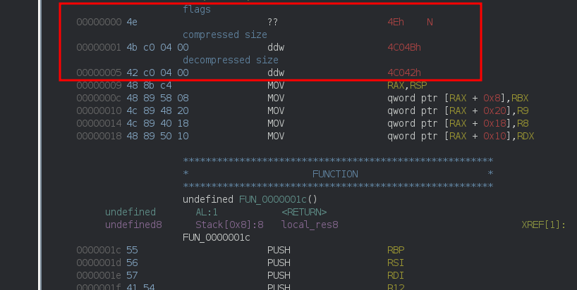
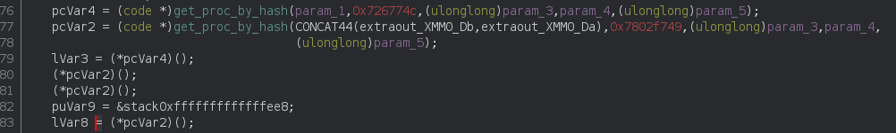

Automatically Unpacking IcedID Stage 1 with Angr
0verfl0w posted a small challenge on the Zero 2 Automated discord server asking to automatically extract the configuration of an unpacked IcedID sample (0581f0bf260a11a5662d58b99a82ec756c9365613833bce8f102ec1235a7d4f7).
Unpacking the sample was part of the exercise but could be done manually as a one shot, however the more I looked into the stager, the more i though an automated unpacker would be a fun thing to do.
I’ll skip over some details of stagers (like API hashing and injection) to focus only on the unpacking.
TL;DR: full code is available here: https://github.com/matthw/icedid_stage1_unpack.
1. Structure and Flow
The packed data are really easy to identify: there’s a huge hex string in the data section, and by hex string i a mean littleral string of [0-9a-f] characters.
[...]
000af670 33 62 36 64 34 39 61 61 36 35 33 36 31 34 64 65 |3b6d49aa653614de|
000af680 33 31 62 32 66 64 37 31 65 64 38 66 61 30 37 63 |31b2fd71ed8fa07c|
000af690 63 34 30 39 64 64 34 38 61 65 36 35 38 39 31 61 |c409dd48ae65891a|
000af6a0 63 36 33 61 30 39 39 36 31 38 61 63 38 35 30 33 |c63a099618ac8503|
000af6b0 62 34 32 37 39 31 36 63 66 36 31 66 31 31 33 30 |b427916cf61f1130|
000af6c0 37 66 35 39 30 35 33 31 65 37 37 39 35 34 31 33 |7f590531e7795413|
000af6d0 63 64 31 62 32 30 00 00 00 00 00 00 00 00 00 00 |cd1b20..........|
The unpacking process is as follow:
┌────────────┐
│ │
│ Hex Decode │
│ │
└─────┬──────┘
│
│
┌─────▼──────┐
│ │
┌─────┤ RC4 │
│ │ │
│ └─────┬──────┘
│ │
│ │
┌──────▼─────┐ │
│ │ │
│ XOR │ │
│ (optionnal)│ │
│ │ │
└─────┬──────┘ │
│ │
│ │
│ ┌─────▼──────┐
│ │ │
└──────► QuickLZ │
│(decompress)│
│ │
└─────┬──────┘
│
│
┌─────▼──────┐
│ │
│ Split │
│ │
└────────────┘
The control flow at assembly level is very obfuscated, so the decompiler comes handy even if it doesn’t produces perfect results.
1.1. Hex decode
The first step is to decode the hex string:
for (i = 0; i < length; i = i + 2) {
chr = hexencoded_data[i];
next_chr = hexencoded_data[i + 1];
v1 = is_valid_hex_chr(chr);
/* not an hex digit, ciao */
if ((v1 == 0) || (v1 = is_valid_hex_chr(next_chr), v1 == 0)) {
memset((ulonglong)destination,0,0x10,uVar2,chr,length);
get_TEB();
(*RtlFreeHeap)();
return 0;
}
/
/* convert 1st ascii chr to hex value, ex: 'a' -> 0xa */
v1 = hex_digit_to_int(chr);
/* 0xa -> 0xa0 */
high4 = (byte)(v1 << 4);
/* convert 2nd ascii chr to hex value '8' -> 0x8 */
low4 = hex_digit_to_int(next_chr);
/* make it a byte: 0xa0 | 0x8 == 0xa8 */
*(byte *)(*destination + (i >> 1)) = high4 | (byte)low4;
}
this is a plain equivalent to python’s bytes.fromhex(...)
1.2. RC4
The RC4 routine is easily identified:
The parameters 4 and 5 are respectively a pointer to the key and the length of the key (which is always 4 apparently).
1.3. XOR
The XOR was not present in all samples i checked, but when applied, it reuses the RC4 key.
It looks intimidating but in reality it can be translated to:
for x in range(len(data) - 1):
data[x] = ((data[x] ^ key[x % len(key)]) - data[x + 1]) & 0xff
1.3. QuickLZ
The QuickLZ part was harder to identify. On the first sample I analyzed, there was no compression applied, so at this point the decrypted data looked OK
I could find a valid PE file inside the decrypted data:
00000db0 7c 4d 5a 90 00 03 00 00 00 04 00 00 00 ff ff 00 ||MZ.............|
00000dc0 00 b8 00 00 00 00 00 00 00 40 00 00 00 00 00 00 |.........@......|
00000dd0 00 00 00 00 00 00 00 00 00 00 00 00 00 00 00 00 |................|
00000de0 00 00 00 00 00 00 00 00 00 00 00 00 00 d0 00 00 |................|
00000df0 00 0e 1f ba 0e 00 b4 09 cd 21 b8 01 4c cd 21 54 |.........!..L.!T|
00000e00 68 69 73 20 70 72 6f 67 72 61 6d 20 63 61 6e 6e |his program cann|
00000e10 6f 74 20 62 65 20 72 75 6e 20 69 6e 20 44 4f 53 |ot be run in DOS|
00000e20 20 6d 6f 64 65 2e 0d 0d 0a 24 00 00 00 00 00 00 | mode....$......|
00000e30 00 21 c9 10 93 65 a8 7e c0 65 a8 7e c0 65 a8 7e |.!...e.~.e.~.e.~|
but i still noticed some kind of header at the very beginning of the extracted data, and that the dword starting at offset 1 was actually the size of the data blob 
I thought it was some kind of internal structure I could just ignore, until I started having issues with some samples where the embedded PE file seemed corrupt:
00000c40 3e eb df 8f 46 03 4d 5a 90 00 03 f3 03 00 80 46 |>...F.MZ.......F|
00000c50 8a 10 ff ff cd 17 20 c6 00 06 93 fb 01 00 0b f2 |...... .........|
00000c60 03 0e 1f ba 0e 00 b4 09 cd 21 b8 01 4c cd 21 54 |.........!..L.!T|
00000c70 68 69 73 20 70 72 00 00 00 80 6f 67 72 61 6d 20 |his pr....ogram |
00000c80 63 61 6e 6e 6f 74 20 62 65 20 72 75 6e 20 69 6e |cannot be run in|
00000c90 20 44 4f 53 20 6d 6f 64 65 20 40 10 c4 2e 0d 0d | DOS mode @.....|
00000ca0 0a 24 12 11 21 c9 10 93 65 a8 7e c0 16 01 42 6e |.$..!...e.~...Bn|
00000cb0 05 c0 67 20 16 ca 7f c1 6e 0a 05 7f c0 4f 20 08 |..g ....n....O .|
00000cc0 0a 07 88 83 cc 7a 0a 04 83 cc 7e c1 64 0a 02 7c |.....z....~.d..||
00000cd0 0a 02 52 69 63 68 06 0e 16 25 8b 5e 03 64 86 07 |..Rich...%.^.d..|
After some time staring at the code, it turned out that it’s using QuickLZ.
Major pointers were:
- the header format, as described here:
┌─────╥──╥──╥──╥──╥──╥──╥──╥──┐
│Flags║ Comp size ║ Dec size │
└─────╨──╨──╨──╨──╨──╨──╨──╨──┘
- finding code like this
looking very very similar to https://github.com/sergey-dryabzhinsky/python-quicklz/blob/master/quicklz.c#L630
Luckily for us there’s python bindings for QuickLZ, which work just fine: https://pypi.org/project/pyquicklz/.
1.4 Split
The decrypted data blob can be split at every occurences of the |SPL| marker, the string is build on the stack:
I kind of skipped the details in my analysis because i do not need them for now.
2. Automating
Right now we have everything we need for unpacking:
- the data blob is easy to grab from the data section, with a regex for example
- RC4 is vanilla
- the XOR is easy to implement
- QuickLZ has python bindings
The only thing we need to be able to recover is the RC4/XOR key, and that’s where the fun begins.
The key is not stored as data, instead it’s computed in the code and stored on the stack:
so in this case the key is:
>>> p32(0x11c7425e + 0x68)
b'\xc6B\xc7\x11'
2.1. Failed Approach
my first approach was to match the bytes using a YARA rule like:
rule key {
strings:
// C74424 34 5E42C711 | mov dword ptr ss:[rsp+34],11C7425E
// 834424 34 68 | add dword ptr ss:[rsp+34],68
$instr = { C7 44 24 ?? ?? ?? ?? ?? 8? ?? 24 ?? ?? }
condition:
$instr
}
emulate all the matches with unicorn, fetch the result from the stack and try all values as keys.
The key grabbing looked like this and worked on some samples:
def emulate(code):
""" emulate the potential key instruction and return
whatever 4 byte value is on the stack (or None)
"""
ADDR_TEXT = 0x1000000
ADDR_STACK = 0x7000000
mu = Uc(UC_ARCH_X86, UC_MODE_64)
mu.mem_map(ADDR_TEXT, 0x1000)
mu.mem_map(ADDR_STACK, 0x1000)
# copy code
mu.mem_write(ADDR_TEXT, code)
# init rsp
mu.reg_write(UC_X86_REG_RSP, ADDR_STACK)
# emulate
try:
mu.emu_start(ADDR_TEXT, ADDR_TEXT + len(code))
except unicorn.UcError:
pass
# read stack
stack = mu.mem_read(ADDR_STACK, 0x100)
# assume there's no null byte
for v in [stack[i:i+4] for i in range(0, len(stack), 4)]:
if u32(v) != 0:
return bytes(v)
return None
def find_keys(pe):
''' find potential instructions setting the key
'''
# find .text
data = get_section(pe, '.text')
rule = yara.compile(source="""
rule key {
strings:
// C74424 34 5E42C711 | mov dword ptr ss:[rsp+34],11C7425E
// 834424 34 68 | add dword ptr ss:[rsp+34],68
$instr = { C7 44 24 ?? ?? ?? ?? ?? 8? ?? 24 ?? ?? }
condition:
$instr
}""")
finds = rule.match(data=data)
# potential code snippet setting the key
key_code = []
for find in finds['main'][0]['strings']:
offset = find['offset']
string = data[offset:offset+16]
if string[3] == string[11]:
#print(string)
key_code.append(string)
potential_keys = []
for code in key_code:
print("--- emulating:")
#disasm(code)
key = emulate(code)
# assume no null byte in key
if key is not None and not b'\x00' in key:
potential_keys.append(key)
return potential_keys
./unpack2.py 0581f0bf260a11a5662d58b99a82ec756c9365613833bce8f102ec1235a7d4f7.bin
--- emulating:
0x1000: mov dword ptr [rsp + 0x20], 4
0x1008: add dword ptr [rsp + 0x20], 0
0x100d: jmp 0x1067
--- emulating:
0x1000: mov dword ptr [rsp + 0x34], 0x11c7425e
0x1008: add dword ptr [rsp + 0x34], 0x68
--- emulating:
0x1000: mov dword ptr [rsp + 0x14], 0xa6
0x1008: add dword ptr [rsp + 0x14], 0x5a
--- emulating:
0x1000: mov dword ptr [rsp + 0x20], 1
0x1008: add dword ptr [rsp + 0x20], 0
0x100d: jmp 0x101f
--- emulating:
0x1000: mov dword ptr [rsp + 0x60], 0
0x1008: add dword ptr [rsp + 0x60], 2
0x100d: jmp 0xfda
--- emulating:
0x1000: mov dword ptr [rsp + 0x50], 2
0x1008: add dword ptr [rsp + 0x50], 2
0x100d: cmp bl, bl
--- emulating:
0x1000: mov dword ptr [rsp + 0x70], 0
0x1008: add dword ptr [rsp + 0x70], 3
0x100d: cmp bp, bp
--- emulating:
0x1000: mov dword ptr [rsp + 0x28], 0x800000e0
0x1008: sub dword ptr [rsp + 0x28], 0xe0
--- emulating:
0x1000: mov dword ptr [rsp + 0x28], 0x800000e0
0x1008: sub dword ptr [rsp + 0x28], 0xe0
--- emulating:
0x1000: mov dword ptr [rsp + 0x44], 0
0x1008: add dword ptr [rsp + 0x44], 3
--- emulating:
0x1000: mov dword ptr [rsp + 0x24], 4
0x1008: add dword ptr [rsp + 0x24], 0
0x100d: jmp 0x1073
--- emulating:
0x1000: mov dword ptr [rsp + 0x28], 0x800000e0
0x1008: sub dword ptr [rsp + 0x28], 0xe0
--- emulating:
0x1000: mov dword ptr [rsp + 0x24], 3
0x1008: add dword ptr [rsp + 0x24], 1
0x100d: jmp 0x1086
--- emulating:
0x1000: mov dword ptr [rsp + 0x24], 1
0x1008: add dword ptr [rsp + 0x24], 0
0x100d: jmp 0x100f
--- emulating:
0x1000: mov dword ptr [rsp + 0x28], 1
0x1008: add dword ptr [rsp + 0x28], 0
0x100d: jmp 0x1050
0x100f: nop
--- emulating:
0x1000: mov dword ptr [rsp + 0x28], 3
0x1008: add dword ptr [rsp + 0x28], 1
0x100d: jmp 0xff6
--- emulating:
0x1000: mov dword ptr [rsp + 0x28], 0x7ffffa1
0x1008: add dword ptr [rsp + 0x28], 0x5f
0x100d: cmp di, di
found 1 potential keys: [b'\xc6B\xc7\x11']
got 0x4c04b data blob
decrypted data
- dump 0581f0bf260a11a5662d58b99a82ec756c9365613833bce8f102ec1235a7d4f7.bin.dump
found 5 elements
- dumped 0581f0bf260a11a5662d58b99a82ec756c9365613833bce8f102ec1235a7d4f7.bin.extracted.0
- dumped 0581f0bf260a11a5662d58b99a82ec756c9365613833bce8f102ec1235a7d4f7.bin.extracted.1
- dumped 0581f0bf260a11a5662d58b99a82ec756c9365613833bce8f102ec1235a7d4f7.bin.extracted.2
- dumped 0581f0bf260a11a5662d58b99a82ec756c9365613833bce8f102ec1235a7d4f7.bin.extracted.3
- dumped 0581f0bf260a11a5662d58b99a82ec756c9365613833bce8f102ec1235a7d4f7.bin.extracted.4
until the flow obfuscation of some samples brought even more fun to the party by putting a jump right in the middle of the key setting:
rendering my initial and pretty naive approach useless.
2.2. Angr
I only played with angr before to solve crackmes and CTF challenges, and I wanted to do something else with it to practice (because let’s face it, i’m pretty bad with angr).
To quote their website:
angr is an open-source binary analysis platform for Python.
It combines both static and dynamic symbolic ("concolic") analysis, providing tools to solve a variety of tasks.
My new goal was:
- Identify the RC4 function using some heuristics
- Walk the control-flow graph (CFG) up to find where it’s called from
- Execute the function(s) calling the RC4 function up to the actual call
- Get the key
┌────────────────────────────────────────────┐
│ FUNCTION WHATEVER │
│ │
├────────────────────────────────────────────┤ step5: emulate from
│ ├────┐ 0x0332 (function start)
┌───────►│ 0x0332 INSTR1 │ │ to
step4: find function │ │ 0x0334 INSTR2 │ │ 0x0456 (call rc4)
start addr │ │ etc... │ │
0x332 │ │ ... │ │
└────────┤ ... │ │
│ ... │ │
┌───────►│ 0x0456 CALL POTENTIAL_RC4 │ ◄──┘
│ │ ... │ step6: dump the key parameter
│ │ ... │
│ │ ... │
step3: find XREF │ │ │
for 0x1234 │ │ │
-> 0x0456 │ │ │
│ └────────────────────────────────────────────┘
│
│
│
│ ┌────────────────────────────────────────────┐
│ │ FUCTION POTENTIAL_RC4 │
└────────┤ │
├────────────────────────────────────────────┤
│ │
┌──────► │ 0x1234 INSTR1 │
│ │ 0x1236 INSTR2 │
step2: find function │ │ etc... │
start addr │ │ │ step1: find offset with
0x1234 │ │ ─────┐ ◄────────────────────────────────┼──────── heuristic (0x1430)
│ │ 0x1430 │ xor eax, ecx │
└────────┤ 0x1432 │ movsxd rcx, dword [var_18h_2] │
│ ──────┘ │
│ │
│ │
└────────────────────────────────────────────┘
Luckily angr can provide a CFG and has a sense of “function”.
We can define a project and get the CFG:
self.prj = angr.Project(filename, load_options={'auto_load_libs': False})
self.cfg = self.prj.analyses.CFGFast()
2.2.1. Finding the RC4 Function
I used some loosy heuristic to find the RC4 but it seems to work well:
# find .text
section = get_section(self.pe, '.text')
data = section.get_data()
# oddly enough this seems to match the rc4 function
# fairly accurately
# like
# 0x1800027c2 33c1 xor eax, ecx
# 0x1800027c4 48634c2418 movsxd rcx, dword [var_18h_2]
# or
# 0x180004242 0fb68c0cd0000000 movzx ecx, byte [rsp + rcx + 0xd0]
# 0x18000424a 33c1 xor eax, ecx
# 0x18000424c e974feffff jmp 0x1800040c5 ; fcn.180003bbf+0x506
rule = yara.compile(source="""
rule rc4 {
strings:
//$s1 = { 33 c1 }
$s2 = { 33 c1 48 63 4c 24 ?? }
$s3 = { 33 c1 (e9 | 3a) }
condition:
$s2 or $s3
}""")
# get matching offsets
finds = rule.match(data=data)
Then we just need to fix the offsets - which are relative to the start of .text, so they match the RVA:
offsets = []
for find in finds['main'][0]['strings']:
# offset are relative to .text, rebase them
off = self.pe.OPTIONAL_HEADER.ImageBase + section.VirtualAddress + find['offset']
offsets.append(off)
Using these offsets, we can find the start of the function they live in:
for offset in offsets:
# find function containg the offset
func = self.find_func_addr(offset)
if func is None:
print("skip 0x%x: not part of a func..."%offset)
continue
if not len(func.predecessors):
print("skip 0x%x: no predecessor..."%offset)
continue
if len(func.predecessors) > 2:
print("skip 0x%s: too many predecessors (%d)"%(func.addr, len(func.predecessors)))
continue
print("found potential rc4 code: 0x%x"%func.addr)
We discard the offsets if:
- they do not belong to a function
- they belong to a function with no predecessors (meaning it’s not called)
- they belong to a function with more than 2 predecessors (called from more than 2 different places)
- the RC4 function should only be called from one place - 2 is being conservative
Now that we have the start address of a potential RC4 function, we need to:
- find the XREF (the
CALL rc4) - find the calling function start address
Which is just repeating what we just did:
# list of (start_addr, stop_addr) to emulate
explorer = []
for pred in func.predecessors:
caller = self.find_func_addr(pred.addr)
# skip some cases where start_addr == stop_addr
if caller is not None and caller.addr != pred.addr:
explorer.append((caller.addr, pred.addr))
print(" * found caller (0x%x -> 0x%x)"%(caller.addr, pred.addr))
At this stage, we should have a list in the form of:
explorer = [
(addr_start_func1, addr_call_rc4_in_func1),
(addr_start_func2, addr_call_rc4_in_func2),
...
]
We can just emulate from the function start address to the call rc4 function address and dump the key from register r9 (according to the x64 fastcall convention, r9 holds the 4th parameter - the pointer to the key in our case).
2.2.2. Emulation
The emulation goes as follow:
- create an initial state simulating a function call at our start address
- we use the
CALLLESSoption to skip over function calls as they are not related to the key computation
- we use the
state = self.prj.factory.call_state(addr=start_addr)
state.options.add(angr.options.CALLLESS)
- create a
Simulation Managerand thenstepuntil one of the state reachs our destination address
simgr = self.prj.factory.simulation_manager(state)
while True:
simgr.step()
for state in simgr.active:
key = self.check_state(state, stop_addr)
if key is not None:
return key
with a few extra conditions to avoid looping when there’s no active path left or when the paths gets too complex (arbitrary pick), it looks like this:
def emulate(self, start_addr, stop_addr, max_iter=3000):
""" symbolic execution from start_addr to stop_addr.
max_iter is the maximum number of instructions
return None if failed, or [r9]
"""
print("emulating from 0x%x to 0x%x (max iter = %s)"%(start_addr, stop_addr, max_iter))
state = self.prj.factory.call_state(addr=start_addr)
# no function call
state.options.add(angr.options.CALLLESS)
simgr = self.prj.factory.simulation_manager(state)
while True:
# advance all states by one basic block
simgr.step()
max_iter -= 1
# very arbitrary picks
# we shouldnt run into too complex paths
if not max_iter or len(simgr.active) > 10 or not len(simgr.active):
return None
# check each active
for state in simgr.active:
key = self.check_state(state, stop_addr)
if key is not None:
return key
return None
The check_state function will check if the current state address is the destination address, and if so, will dereference the value of the R9 register (4th parameter)
and read a DWORD in there.
I assume the key is always 4 bytes long, however should it not be the case, its length can be read from the stack (5th function parameter).
def check_state(self, state, stop_addr):
""" check if a state reached the expected address)
hook potential call with unconstrained destinatinations
returns the key if arrived at destination
"""
# final destination
#if state.addr in range(stop_addr, stop_addr+8):
if state.addr == stop_addr:
# dereference r9 register and read a DWORD
# we assume the key is 4 bytes, we could read its size off the stack
return p32(state.solver.eval(state.mem[state.regs.r9].uint32_t.resolved))
There’s an extra twist in the check_state function.
The sample uses API hashing to resolve api proc addresses, and we explicitly told angr to skip function calls (CALLLESS). The effect of the CALLLESS flag is that the return value of all function calls will be unconstrained (symbolic).
So what should have been:
address = get_proc_address(0x12345678) // return 0x18032323
(*0x12345678)(arg1, arg2)
becomes:
address = get_proc_address(0x12345678) // return some symbolic constant
(*????????)(arg1, arg2)
and basically angr stops because there’s too many possible paths (for some reason, even with the CALLLESSflag).

call to resolved function (call to a stack address):

My work around to that was to hook all CALLinstructions to a temp address by:
- checking if the node successor is reached via a call:
if block.vex.jumpkind == 'Ijk_Call':
- then checking if the call uses a temp value:
if block.vex.next.tag == 'Iex_RdTmp':
- looping over the block instruction to find the actuall call and hooking it with something of ours:
for insn in self.prj.factory.block(block.addr).capstone.insns:
if insn.mnemonic == 'call':
if insn.address not in self.hooks:
print("hooking addr=0x%x size=%s"%(insn.address, insn.size))
self.prj.hook(insn.address, hook_api_hash, length=insn.size)
# in order to avoid hook twice // angr would warn anyway
self.hooks.append(insn.address)
The hook is very simple and looks like that:
def hook_api_hash(state):
""" hook register calls with this
"""
# symbolize return value
state.regs.rax = claripy.BVS('ret', 64)
The full check_state function looks like this:
def check_state(self, state, stop_addr):
""" check if a state reached the expected address)
hook potential call with unconstrained destinatinations
returns the key if arrived at destination
"""
# final destination
#if state.addr in range(stop_addr, stop_addr+8):
if state.addr == stop_addr:
# dereference r9 register and read a DWORD
# we assume the key is 4 bytes, we could read its size off the stack
return p32(state.solver.eval(state.mem[state.regs.r9].uint32_t.resolved))
#
# hook registers calls (api hashing)
# we want to hook all "call $tmp", otherwise angr gets lost
# even with angr.options.CALLLESS
#
try:
block = state.block()
except angr.errors.SimEngineError:
return None
# verify that the block ends with a call
if block.vex.jumpkind == 'Ijk_Call':
# the next block is based on tmp value
if block.vex.next.tag == 'Iex_RdTmp':
# iterates over block instructions to find the call addr and size
for insn in self.prj.factory.block(block.addr).capstone.insns:
if insn.mnemonic == 'call':
if insn.address not in self.hooks:
print("hooking addr=0x%x size=%s"%(insn.address, insn.size))
self.prj.hook(insn.address, hook_api_hash, length=insn.size)
# in order to avoid hook twice // angr would warn anyway
self.hooks.append(insn.address)
return None
in the end we, we can just loop over the (start_addr, stop_addr) tupples, to get a list of potential RC4 keys:
# emulate all potential calls
potential_keys = []
for start, stop in explorer:
# emulate
key = self.emulate(start, stop)
if key:
potential_keys.append(key)
return potential_keys
2.3. Decrypting
now that we constructed a list of potential keys, we can just try them all. using the QuickLZ header, we can know that we found a correct one by matching the size of the data with what’s in the header:
def try_to_decrypt(data, potential_keys):
''' try all keys with xor and without
it seems the xor is not always applied
'''
for key in potential_keys:
for apply_xor in [True, False]:
print("trying key %r / xor=%r"%(key, apply_xor))
dec = decrypt(data, key, apply_xor)
if dec is not None:
return dec
return None
def decrypt(data, key, apply_xor):
''' decrypt + decompress data
'''
# RC4 decrypt
cipher = ARC4(key)
dec = bytearray(cipher.decrypt(data))
# dexor
if apply_xor:
for x in range(len(dec) - 1):
dec[x] = ((dec[x] ^ key[x % len(key)]) - dec[x + 1]) & 0xff
# Quick check we got valid data
# ref: quicklz format: https://github.com/ReSpeak/quicklz/blob/master/Format.md
# DWORD at decrypted data+1 should be the length
if u32(dec[1:5]) == len(data):
return quicklz.decompress(bytes(dec))
The XOR pass doesn’t seem to always be applied, so we try with and without.
3. C2 Extraction
Extracting the C2 address and campain ID from the unpacked PE is pretty straight forward.
We just need to XOR 2 32 bytes data blob (from the .d section) with each other:
def extract_c2(filename):
pe = pefile.PE(filename)
data = get_section(pe, ".d").get_data()
key = data[:0x20]
conf = data[0x40:0x40+0x20]
data = xor(key, conf)
camp = u32(data[:4])
c2 = data[4:].split(b'\x00')[0]
return {'campaign_id': camp, 'c2': c2}
4. Showcase
% ./icedid_stage1_unpack.py 0581f0bf260a11a5662d58b99a82ec756c9365613833bce8f102ec1235a7d4f7.bin
got data blob: 0x4c04b bytes
found potential rc4 code: 0x1800026b3
* found caller (0x180001b77 -> 0x180001bc0)
emulating from 0x180001b77 to 0x180001bc0 (max iter = 3000)
found 1 potential keys: [b'\xc6B\xc7\x11']
trying key b'\xc6B\xc7\x11' / xor=True
decrypted data: 0x4c042 bytes
found 5 elements
- dumped 0581f0bf260a11a5662d58b99a82ec756c9365613833bce8f102ec1235a7d4f7.bin.extracted.0
- dumped 0581f0bf260a11a5662d58b99a82ec756c9365613833bce8f102ec1235a7d4f7.bin.extracted.1
- dumped 0581f0bf260a11a5662d58b99a82ec756c9365613833bce8f102ec1235a7d4f7.bin.extracted.2
looks like a PE... {'campaign_id': 109932505, 'c2': b'ilekvoyn.com'}
- dumped 0581f0bf260a11a5662d58b99a82ec756c9365613833bce8f102ec1235a7d4f7.bin.extracted.3
- dumped 0581f0bf260a11a5662d58b99a82ec756c9365613833bce8f102ec1235a7d4f7.bin.extracted.4
% ./icedid_stage1_unpack.py samples/17aeebe6c1098a312074b0fdeae6f97339f2d64d66a2b07496bfc1373694a4e3.bin
got data blob: 0x3820 bytes
found potential rc4 code: 0x180003fc1
* found caller (0x1800011c3 -> 0x180001507)
emulating from 0x1800011c3 to 0x180001507 (max iter = 3000)
found 1 potential keys: [b'k\xfe\xfa\x8b']
trying key b'k\xfe\xfa\x8b' / xor=True
trying key b'k\xfe\xfa\x8b' / xor=False
decrypted data: 0x5714 bytes
found 4 elements
- dumped samples/17aeebe6c1098a312074b0fdeae6f97339f2d64d66a2b07496bfc1373694a4e3.bin.extracted.0
- dumped samples/17aeebe6c1098a312074b0fdeae6f97339f2d64d66a2b07496bfc1373694a4e3.bin.extracted.1
- dumped samples/17aeebe6c1098a312074b0fdeae6f97339f2d64d66a2b07496bfc1373694a4e3.bin.extracted.2
looks like a PE... {'campaign_id': 429479428, 'c2': b'arelyevennot.top'}
- dumped samples/17aeebe6c1098a312074b0fdeae6f97339f2d64d66a2b07496bfc1373694a4e3.bin.extracted.3
% ./icedid_stage1_unpack.py samples/12a692718d21b8dc3a8d5a2715688f533f1a978ee825163d41de11847039393d.bin
got data blob: 0x16064 bytes
skip 0x6442458550: too many predecessors (4)
found potential rc4 code: 0x180003bbf
* found caller (0x1800016bf -> 0x180001980)
emulating from 0x1800016bf to 0x180001980 (max iter = 3000)
hooking addr=0x18000184b size=7
hooking addr=0x180001c19 size=7
hooking addr=0x180001c09 size=7
hooking addr=0x180001bdc size=7
found 1 potential keys: [b',u\xe2I']
trying key b',u\xe2I' / xor=True
decrypted data: 0x179f7 bytes
found 5 elements
- dumped samples/12a692718d21b8dc3a8d5a2715688f533f1a978ee825163d41de11847039393d.bin.extracted.0
- dumped samples/12a692718d21b8dc3a8d5a2715688f533f1a978ee825163d41de11847039393d.bin.extracted.1
- dumped samples/12a692718d21b8dc3a8d5a2715688f533f1a978ee825163d41de11847039393d.bin.extracted.2
looks like a PE... {'campaign_id': 3068011852, 'c2': b'yolneanz.com'}
- dumped samples/12a692718d21b8dc3a8d5a2715688f533f1a978ee825163d41de11847039393d.bin.extracted.3
- dumped samples/12a692718d21b8dc3a8d5a2715688f533f1a978ee825163d41de11847039393d.bin.extracted.4
The extracted data blobs are:
- 2 shellcodes
- 1 DLL
- 1 or 2 images:
% file 0581f0bf260a11a5662d58b99a82ec756c9365613833bce8f102ec1235a7d4f7.bin.extracted.*
0581f0bf260a11a5662d58b99a82ec756c9365613833bce8f102ec1235a7d4f7.bin.extracted.0: data
0581f0bf260a11a5662d58b99a82ec756c9365613833bce8f102ec1235a7d4f7.bin.extracted.1: data
0581f0bf260a11a5662d58b99a82ec756c9365613833bce8f102ec1235a7d4f7.bin.extracted.2: PE32+ executable (DLL) (GUI) x86-64, for MS Windows
0581f0bf260a11a5662d58b99a82ec756c9365613833bce8f102ec1235a7d4f7.bin.extracted.3: JPEG image data, JFIF standard 1.01, resolution (DPI), density 72x72, segment length 16, baseline, precision 8, 800x600, components 3
0581f0bf260a11a5662d58b99a82ec756c9365613833bce8f102ec1235a7d4f7.bin.extracted.4: JPEG image data, Exif Standard: [TIFF image data, big-endian, direntries=7, software=Adobe Photoshop 21.2 (Windows), datetime=2021-03-25T08:49:36+07:00], baseline, precision 8, 800x800, components 3
5. Conclusion
While it is certainly not the most optimal method to unpack the samples, it was a fun exercise to do.
The full code is available here: https://github.com/matthw/icedid_stage1_unpack.